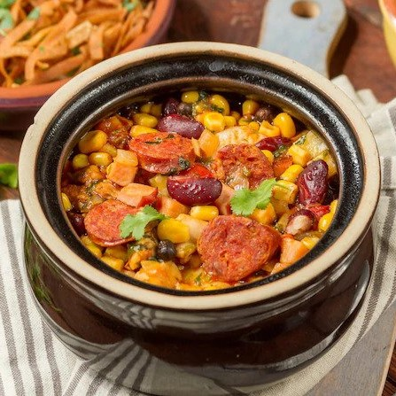

Hiszpańska zupa z czerwoną fasolą, soczewicą i kiełbasą chorizo
Pyszną i pełną smaku hiszpańską zupę z soczewicy z kiełbasą chorizo najlepiej podawać ze świeżym, chrupiącym pieczywem. Zamiast suchej soczewicy można użyć tej z puszki - zupa ugotuje się wtedy jeszcze szybciej.